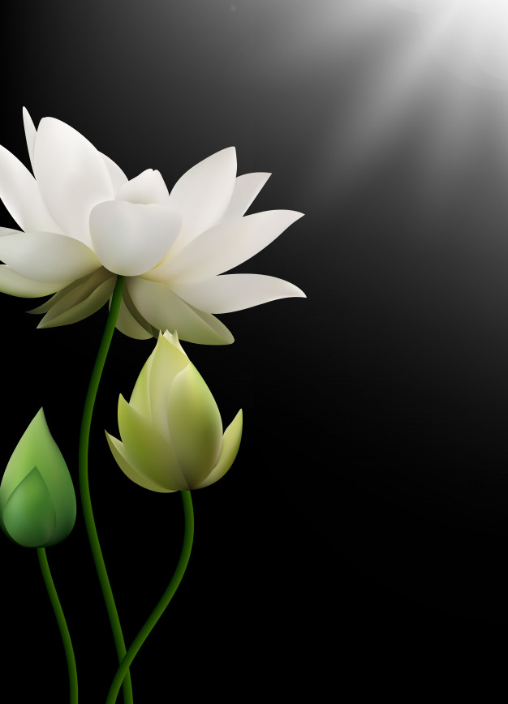
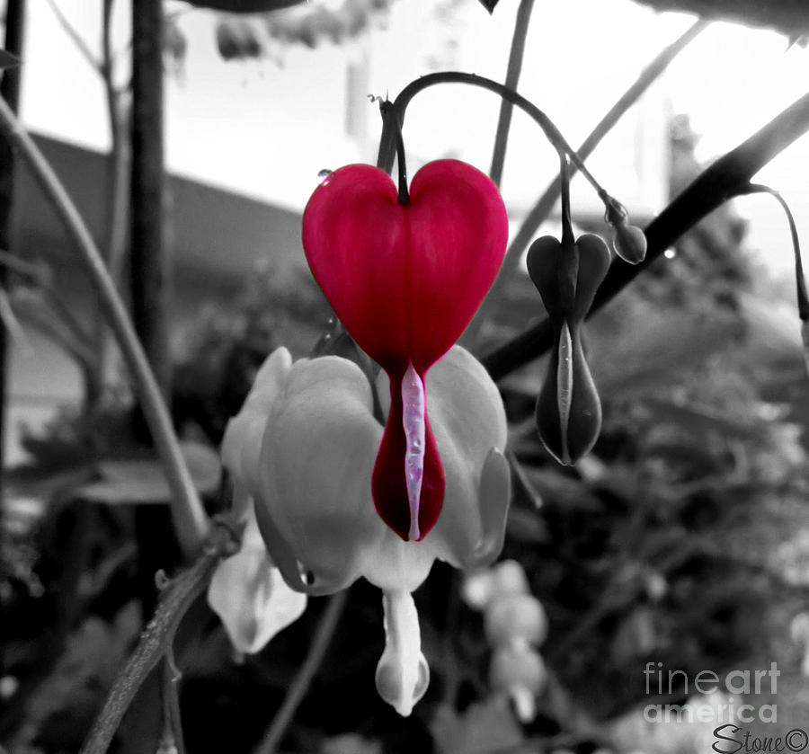
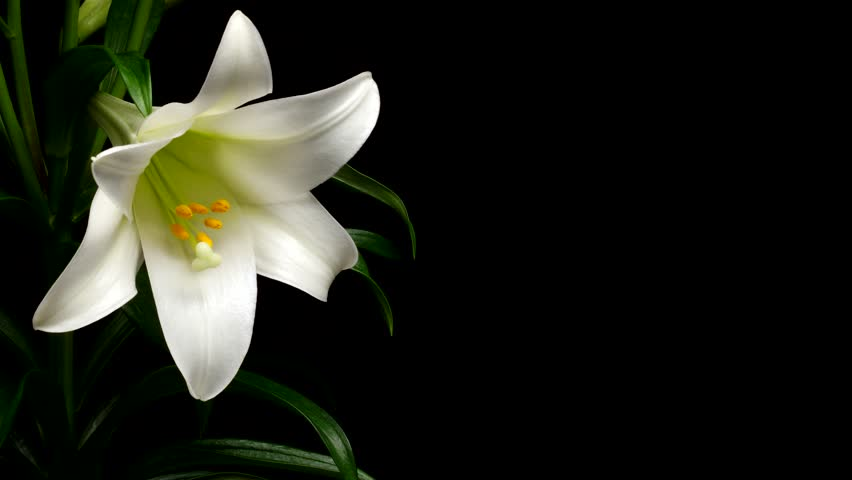
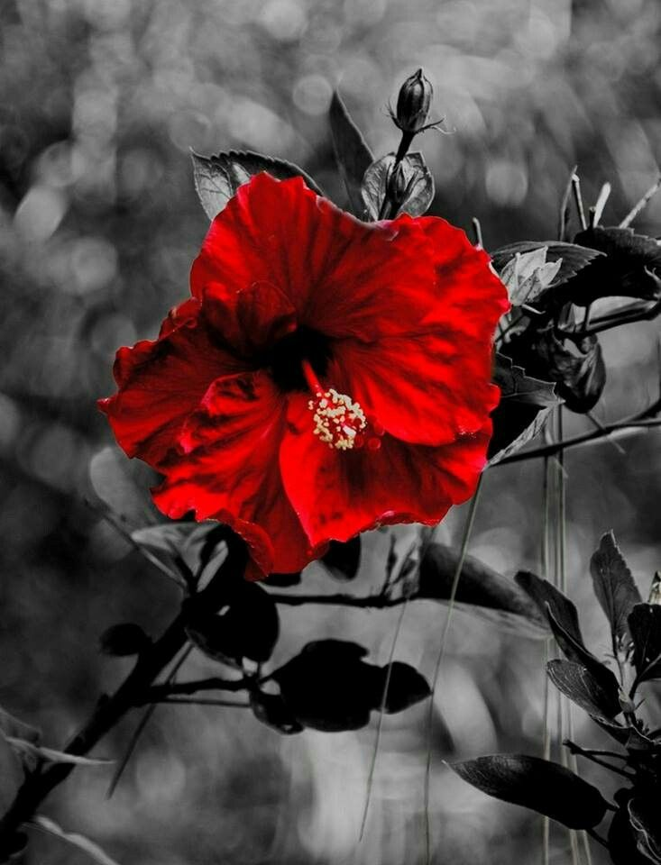

Home
Birds
landscapes
"By plucking her petals, you do not gather the beauty of the flower" -Rabindranath Tagore
Rose is a shrub.
Roses are of many colours.
Rose is considered as a symbol of balance.>
The name Rose is derived from Latin word Rosa.
Rose belong to the family of plants called Rosaceae.
Most roses have thorns in their stem.
Roses are used for their scent too.
Pink rose is to express gentle emotions,joy or gratitude.
White rose is to express purity and innocence.

Its Indias national flower and is symbolic in Buddhism and Hinduism
for wealth, prosperity,purity and fertility.
The flower species is native to Asia, and most predominantly
in India and China.
The most common color variations of the lotus flower is pink and white.
Other popular lotus colors include blue and red.
The lotus has been historically used for medicinal purposes such as
a pain reliever and for alleviating muscle spasms.
It’s an aquatic plant species that thrives in ponds and lakes, and
most exclusively during warm seasons.
The flower can reach up to twenty inches above water, which helps
distinguish it from other botanical varieties like marigolds or arrowheads.

Bleeding hearts are food source for larvae of certain
butterfly species, snails and aphids.
Root of bleeding heart can be used in treatment of painful sprains and bruises.
Bleeding heart tolerates drought and it is fire resistant.
Certain varieties of bleeding heart produce golden yellow
or fern-like leaves.
There are also cultivars of bleeding heart that produce white flowers.
Bleeding heart is perennial plant, which means that
it can survive more than 2 years in the wild.
Bleeding heart blooms during the spring and summer.

Size of a lily depends on the species. It can grow from 2 to 6 feet in height.
Lily develops from a bulb that can be located
near the surface of the ground or buried deep underground.
Each color of the lily has certain meaning. White lily symbolizes purity, daylily coquetry,
while tiger lily symbolizes majesty and wealth.
Lily flower consists of 6 tepals (fused sepals and petals).
Nectar is produced at the base of each leaf.
Lily is dormant during the winter. Flowering takes place during the spring and summer.
Lily attracts insects with its large colorful flowers and tasteful nectar.
Certain species of lily are pollinated by wind.
Lily can reproduce from the seed, bulbs and tissue cultures.

The most popular beverage made of hibiscus is tea (made of dry flowers).
Besides pleasant taste, tea made of hibiscus represents rich source of vitamin C.
According to some medical studies, tea made of
hibiscus lowers blood pressure and decreases cholesterol level.
A paste made of crushed hibiscus leaves and flowers can be used as home-madeshampoo.
Hibiscus cannabinus is a species of hibiscus that is used in the paper industry.
China and Thailand are the greatest producers of hibiscus in the world.
Depending on the specie, hibiscus grows as annual or perennialplant.